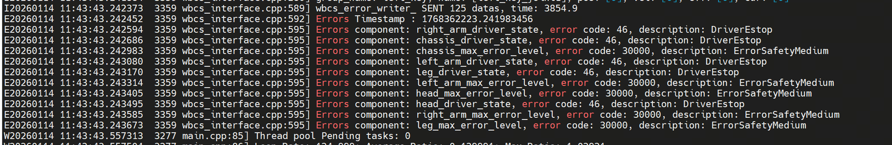
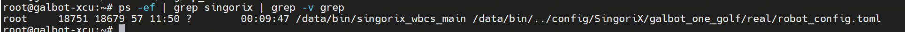
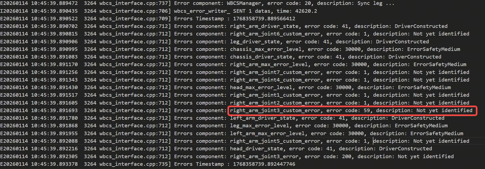
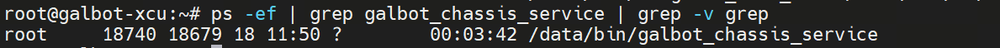
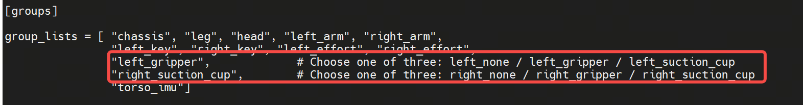

Troubleshooting
This document describes common issues and solutions encountered during SDK usage.
Control Issues
No Response to Control Commands
Possible Cause 1: Robot in Emergency Stop State
Check if the red emergency stop button on the back of the robot is pressed (not released). View the singorix log using the following command to confirm the status:

Possible Cause 2: Control Service Not Started
Execute the following command to check if the singorix service is running properly:

Possible Cause 3: Chassis Service Abnormality
The chassis service has not started or is running abnormally. Check the chassis service status with the following command:
Also check the singorix log for detailed error information:

Robot Joint Cannot Move
This issue applies to situations where a joint in the head, legs, or arms is unresponsive.
Possible Cause 1: Joint Exceeds Motion Range Limit
The joint position may have reached or exceeded its mechanical limit. This issue is more common in arm joints and can be visually observed as abnormal joint posture. Singorix will output corresponding error information. Check the log:

Possible Cause 2: Joint Initialization Failed
During robot startup, the joint failed to successfully release the brake (no brake release sound). Singorix will output initialization failure error information:
The following screenshot shows an example of head joint initialization failure:

Possible Cause 3: MCU Malfunction
The microcontroller unit (MCU) may have encountered an error or stopped responding. Check the latest log files in the /userdata/log/mp_core/ and /userdata/log/secure_core directories to confirm whether the logs are continuously updated and have no error messages.
Note: Screenshot currently unavailable
Robot Chassis Cannot Move
Possible Cause 1: Chassis Service Not Started
Check if the chassis control service is running properly:

Possible Cause 2: Battery Level Too Low
When the robot battery level falls below 25%, the chassis will stop operating to protect the battery. Check the current battery level (SOC) with the following command:

End Effector Control Failure
This issue applies to situations where the gripper or suction cup cannot be controlled properly.
Possible Cause 1: End Effector Hardware Malfunction
Press and release the emergency stop button and observe whether the end effector (gripper or suction cup) responds. If there is no action, there may be a hardware malfunction.
Possible Cause 2: End Effector Configuration Mismatch
The default singorix configuration is left hand gripper and right hand suction cup. Check if the type of end effector currently installed on the robot matches the configuration. If not, modify the following configuration file:
